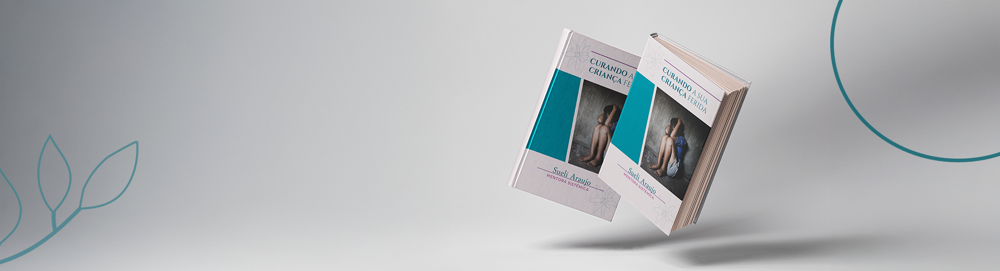
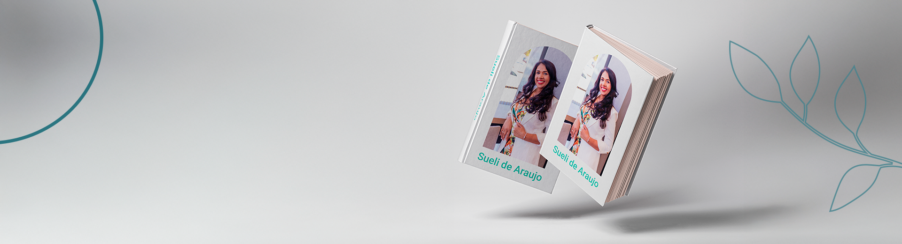
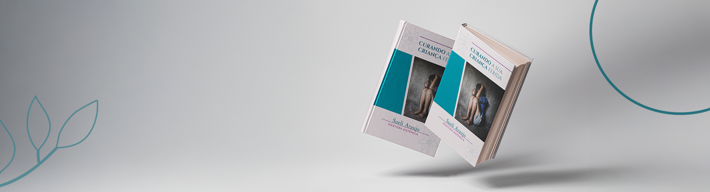
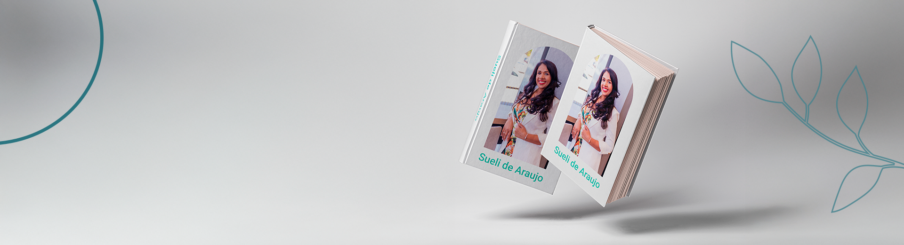

Sou Apaixonada por desenvolvimento humano, iniciei minha jornada em busca de autoconhecimento, mas logo descobri minha paixão por ajudar o próximo. Hoje, atuo como mentora de mulheres e psicanalista.
Minhas formações incluem: Facilitadora Sistêmica, PNL Sistêmica, ThetaHealing (básico, avançado e Digging), Inteligência Emocional, Mentalidade e Crenças Limitantes. Além disso, participei de várias convenções internacionais, workshops, imersões e seminários focados no desenvolvimento pessoal e profissional de mulheres.
Minha missão é ajudar mulheres a prosperarem, reconectarem-se com suas essências e superarem desafios emocionais e pessoais, ganhando coragem e autoconfiança para conquistarem o que desejam. Acredito no poder do autoconhecimento e do empoderamento para transformar vidas.